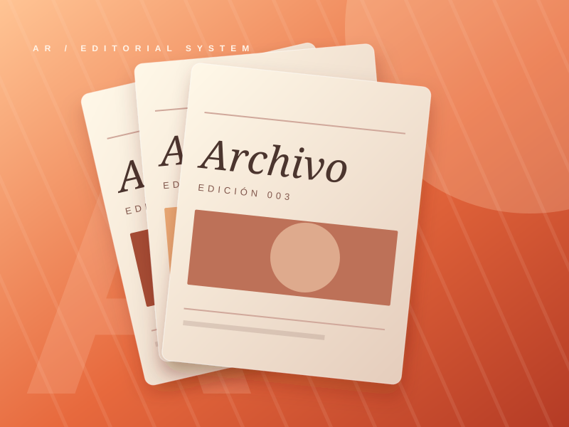
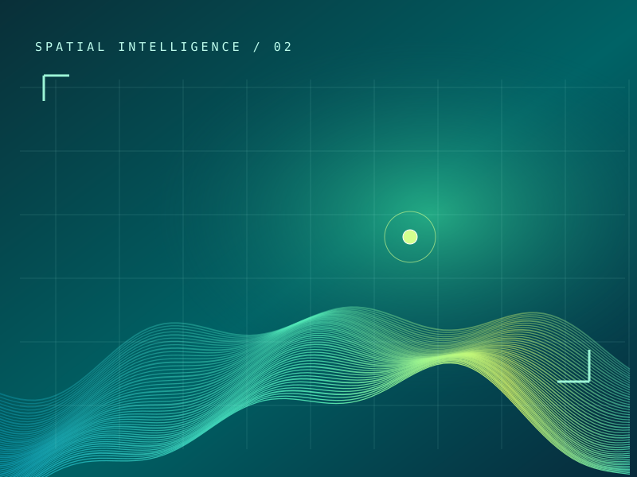
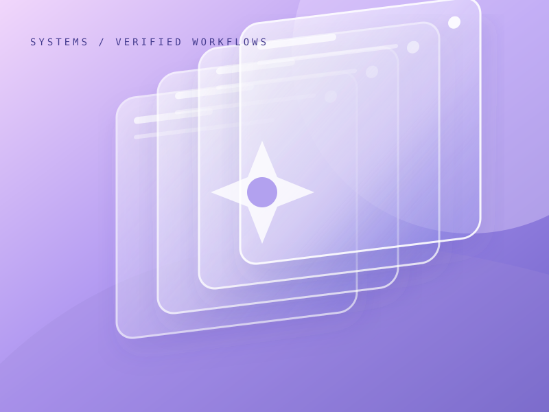
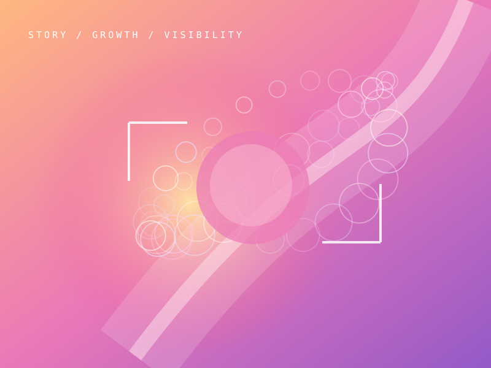

 01 / DIRECCIÓN DE ARTETIENDA PUBLICADA
01 / DIRECCIÓN DE ARTETIENDA PUBLICADA

ARCHIVO
Doce marcas tenían que compartir una tienda. Pero ninguna debía perder su personalidad.
Cómo lo resolví ↗Cuatro proyectos distintos. Abre cualquiera y te cuento qué problema había y cómo lo abordé.

01 / DIRECCIÓN DE ARTETIENDA PUBLICADA
Doce marcas tenían que compartir una tienda. Pero ninguna debía perder su personalidad.
Cómo lo resolví ↗
02 / INVESTIGACIÓNARTE CONCEPTUALUn mapa puede estar lleno de información y aun así no ayudarte a entender qué está pasando.
Lo que fui descubriendo ↗
03 / DIRECCIÓN DE IADOSSIER PÚBLICOSi varios agentes de IA trabajan juntos, ¿cómo sabes qué hicieron y qué puedes dar por válido?
Por qué diseñé este control ↗
04 / COMUNICACIÓNSITIO PUBLICADODe poco sirve ofrecer algo valioso si las personas no entienden en qué puedes ayudarlas.
Cómo ordené el mensaje ↗Busca por nombre o área. Abre cualquier tarjeta para ver qué hace, qué problema aborda y la evidencia disponible.
No hay proyectos con esos filtros.
No siempre hace falta una app. A veces necesitas entender los datos. Otras, encontrar una forma mejor de contar lo que haces.
ARCHIVO me planteó una pregunta sencilla: ¿cómo reúnes doce marcas sin que todas terminen pareciéndose?

En lugar de hacer que todas las marcas hablaran igual, diseñé una estructura común donde cada colección pudiera conservar su propio lenguaje visual.
Te muestro el trabajo Piezas y tienda publicadas. Sin cifras comerciales atribuidas.Según el problema, puedo pasar de investigar una audiencia a diseñar una campaña, de explorar mapas a construir una interfaz o de dirigir una IA a verificar sus resultados.
Conceptos, identidad, exploración visual, storytelling y producción audiovisual.
Ver ARCHIVO ↗Fuentes, hipótesis, referencias, alternativas y decisiones justificadas.
Ver laboratorio ↗Audiencias, posicionamiento, copywriting, campañas y recorridos de contacto.
Ver Visual Art AI ↗Cruce de información, geoespacialidad y visualización para decidir con contexto.
Ver Deep Geo ↗Software, interfaces, operaciones y automatización con estados verificables.
Ver Conv OS ↗Modelos, agentes, restricciones, revisión humana, evidencia y gobernanza.
Ver Meta Harness ↗No siempre hace falta software. No siempre hace falta una campaña. Lo que corresponde es investigar, explorar las alternativas y elegir la intervención más útil.
Personas, fuentes, mercado y contexto.
Conceptos, hipótesis y rutas diferentes.
Comparar alternativas y justificar elecciones.
Arte, comunicación, tecnología y agentes de IA.
Productos, interfaces, contenidos o sistemas.
Examinar evidencia, límites y mejoras.
Defino objetivos, contexto, referencias y restricciones; selecciono modelos y agentes, comparo soluciones y verifico qué se ejecutó. Dirigir IA no es delegarle el juicio a una respuesta automática.
Casos de investigación y desarrollo; el dossier público no es una consola comercial operativa.La comunicación, el análisis y la ingeniería no compiten: se vuelven más útiles cuando se conectan.
Mi recorrido combina comunicación institucional, trabajo editorial y proyectos de tecnología. Hoy investigo, dirijo conceptos visuales, exploro soluciones, desarrollo productos y establezco criterios para revisar el trabajo de IA.
Conocer trayectoria, áreas y proyectosCuéntame qué quieres mejorar, comprender, comunicar o construir. Podemos partir por el problema y pensar qué solución merece la pena explorar.